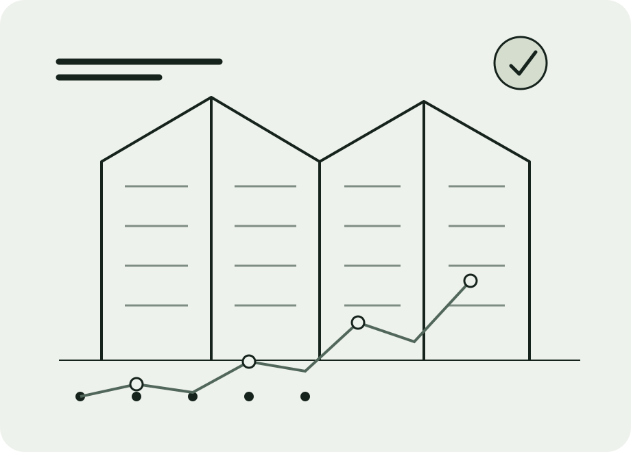

Building science through research, simulation, and software
Hyeong-Gon Jo Building energy researcher · scientific software developer

Research map
Themes that connect the work
Select a theme to filter projects, software, publications, and notes together.
Collaborative research
Selected projects
Roles, methods, outputs, and related software are visible without leaving the page.
No projects match the selected theme.
Independent development
Research software & experimental systems
Repositories are organized by the research problem they address, not by technology alone.
No software matches the selected filters.
Structured bibliography
Publications
One CSV powers this view, citation exports, cross-links, and the generated CV.
No publications match the current filters.
Single source of truth
CV and bibliography outputs
The CV page reads the same profile, project, publication, award, and software data. Print it or export structured formats without maintaining a second document by hand.
Lightweight archive
Notes & photos
Short records of releases, fieldwork, conferences, and milestones—kept on the same page.
No notes match the selected theme.
Background